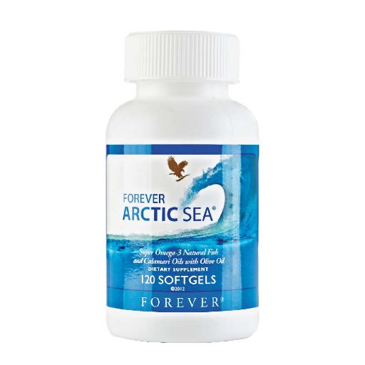
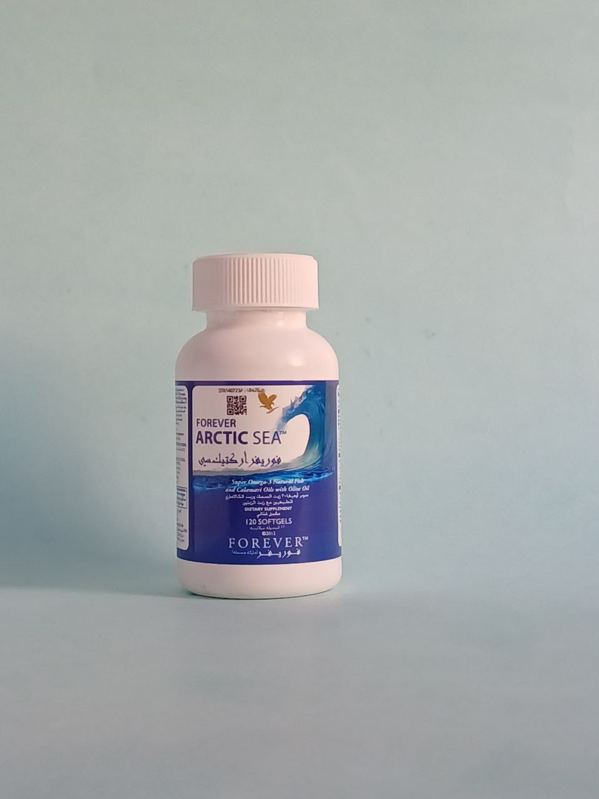
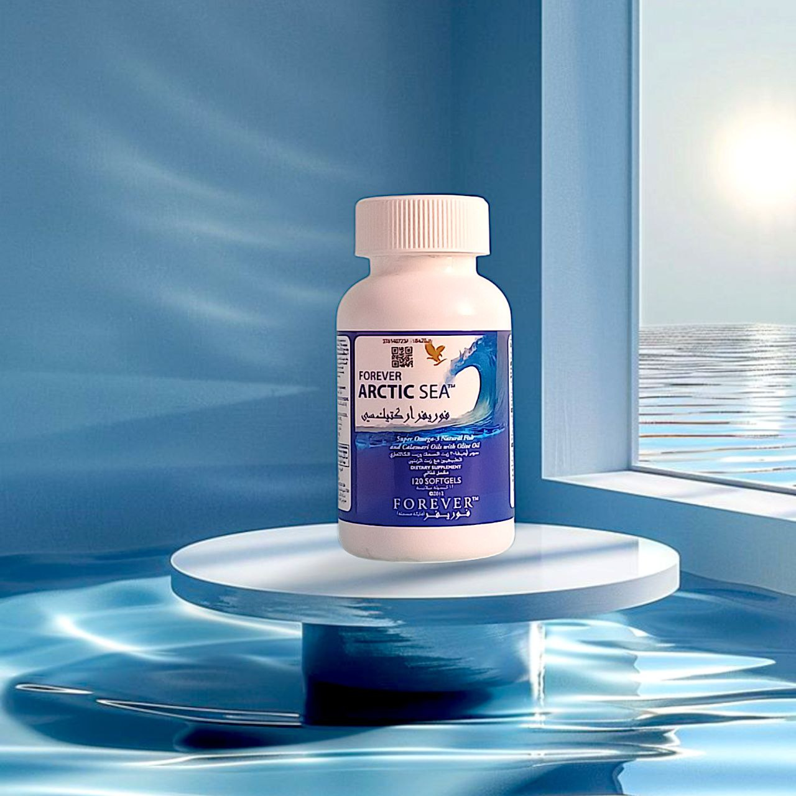

مزيج متوازن تمامًا من أوميغا 3
توفر زيوت السمك والكالاماري تناغمًا مثاليًا للأحماض الدهنية EPA و DHA omega-3 التي قد يفتقر إليها جسمك. بينما تظهر الأبحاث أن أوميجا 3 يوفر مجموعة واسعة من الفوائد الغذائية للإنسان، إلا أنها لا تنتج بشكل طبيعي في أجسامنا. غالبًا ما لا يكون الطعام وحده كافيًا لتحقيق التوازن الصحيح بين EPA و DHA، خاصةً إذا لم تكن المأكولات البحرية جزءًا من نظامك الغذائي.
يحتوي فوريفر أركتيك سي® على النسبة المثالية في كبسولات هلامية بنكهة الحمضيات. استخرجنا أوميغا 3 من أربعة زيوت أسماك نقية من سمك القد وسمك السلمون والأنشوجة والسردين لتحصلوا على الفوائد الغذائية الفريدة.
تدعم أحماض أوميجا 3 الدهنية المناطق الرئيسية من الجسم ، بما في ذلك وظيفة القلب والأوعية الدموية و صحةالجهاز المناعي.
امنح جسمك التغذية الموجودة في البحر و المحيط و التي يتم حصادها بشكل مسؤول.